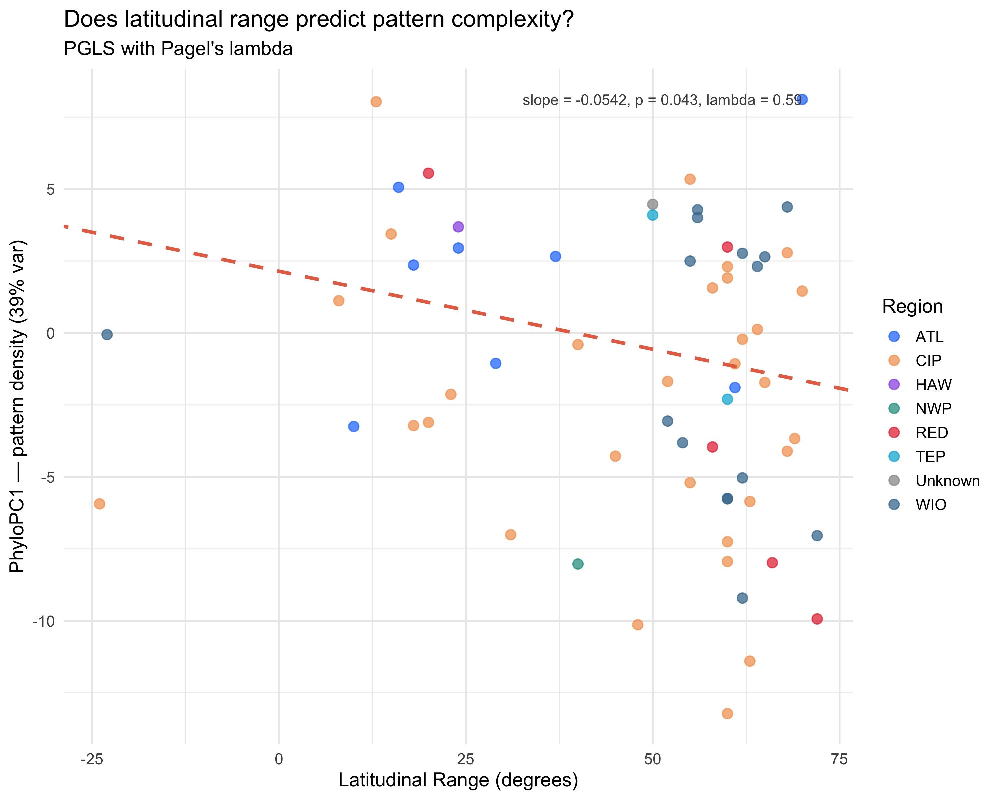
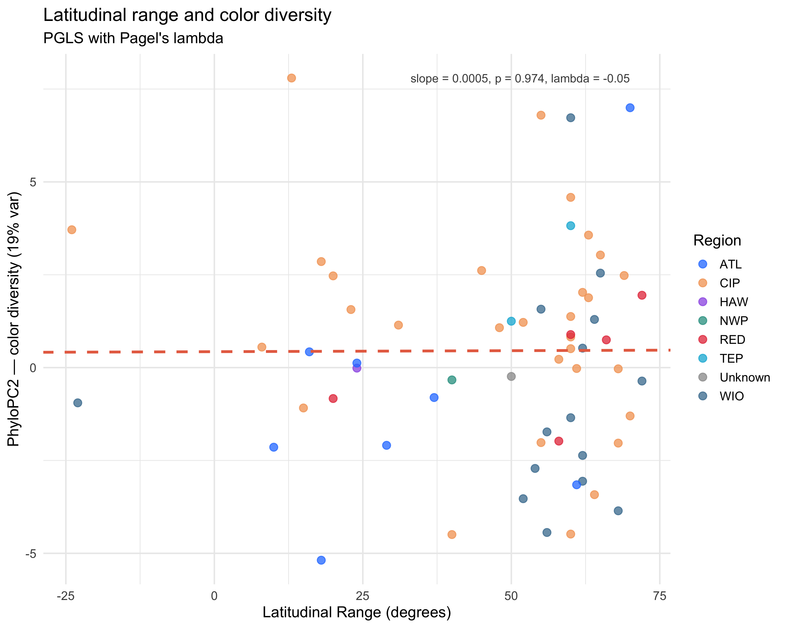

Do tropical butterflyfishes have more diverse colors than temperate ones?
Tip
Ecology recipe. PGLS regression of phylogenetic PC scores and raw chromatic diversity (Jc) against latitudinal range and midpoint latitude. Latitude data come from rfishbase::stocks() (Northernmost / Southermost fields, parsed into signed latitude). Points are colored by primary biogeographic region from the chaets-divergence BioGeoBEARS analysis.
Poster outputs.figures/latitude-gradient-hero.pdf – a 2-panel scatter (PC1 and PC2 vs latitudinal range) colored by region.
What you’re computing
Load latitude (lat_north, lat_south, lat_range) and region data from chaet_master_traits.csv.
Region color palette for the 8 BioGeoBEARS regions.
region_pal <-c(ATL ="#2a7fff", RED ="#e63946", WIO ="#457b9d",CIP ="#f4a261", NWP ="#2a9d8f", CPA ="#e9c46a",HAW ="#9b5de5", TEP ="#00b4d8", Unknown ="grey60")
p1 <-ggplot(df, aes(x = lat_range, y = PC1, color = primary_region)) +geom_point(size =3, alpha =0.75) +geom_abline(intercept =coef(m_pc1)[1], slope =coef(m_pc1)[2],color ="#e76f51", linewidth =1.2, linetype ="dashed") +scale_color_manual(values = region_pal, name ="Region") +annotate("text", x =max(df$lat_range) -2, y =max(df$PC1),label =sprintf("slope = %.4f, p = %.3f, lambda = %.2f",coef(m_pc1)[2],summary(m_pc1)$tTable["lat_range", "p-value"], lam_pc1),hjust =1, size =3.8, color ="grey30") +labs(x ="Latitudinal Range (degrees)",y =sprintf("PhyloPC1 — pattern density (%.0f%% var)", ve[1]),title ="Does latitudinal range predict pattern complexity?",subtitle ="PGLS with Pagel's lambda") +theme_minimal(base_size =14)print(p1)

PhyloPC1 vs latitudinal range, colored by primary biogeographic region.
p2 <-ggplot(df, aes(x = lat_range, y = PC2, color = primary_region)) +geom_point(size =3, alpha =0.75) +geom_abline(intercept =coef(m_pc2)[1], slope =coef(m_pc2)[2],color ="#e76f51", linewidth =1.2, linetype ="dashed") +scale_color_manual(values = region_pal, name ="Region") +annotate("text", x =max(df$lat_range) -2, y =max(df$PC2),label =sprintf("slope = %.4f, p = %.3f, lambda = %.2f",coef(m_pc2)[2],summary(m_pc2)$tTable["lat_range", "p-value"], lam_pc2),hjust =1, size =3.8, color ="grey30") +labs(x ="Latitudinal Range (degrees)",y =sprintf("PhyloPC2 — color diversity (%.0f%% var)", ve[2]),title ="Latitudinal range and color diversity",subtitle ="PGLS with Pagel's lambda") +theme_minimal(base_size =14)print(p2)

PhyloPC2 vs latitudinal range.
Hero PDF
Warning in grid.Call.graphics(C_text, as.graphicsAnnot(x$label), x$x, x$y, :
for 'PhyloPC1 — pattern density (39% var)' in 'mbcsToSbcs': - substituted for —
(U+2014)
Warning in grid.Call.graphics(C_text, as.graphicsAnnot(x$label), x$x, x$y, :
for 'PhyloPC2 — color diversity (19% var)' in 'mbcsToSbcs': - substituted for —
(U+2014)
Latitudinal range varies from narrow endemics (< 10 degrees) to wide-ranging Indo-Pacific species spanning > 60 degrees. A significant positive slope on PC1 would indicate that wide-ranging species tend toward simpler patterns – consistent with the idea that geographic generalists converge on broadly-effective, less conspicuous designs. A significant negative slope on Jc vs midpoint latitude would support the prediction that tropical species harbor higher chromatic diversity than temperate ones.
Note that coverage is moderate (around 68 species with latitude data from FishBase stocks), so power is somewhat reduced. The color-coded scatter reveals whether the latitude signal is confounded with biogeographic region: if CIP and WIO species cluster separately from ATL and CPA, the latitude effect may be partly a proxy for region.
Output files for the poster
File
What to use it for
figures/latitude-gradient-hero.pdf
2-panel scatter: PC1 and PC2 vs latitudinal range, colored by region